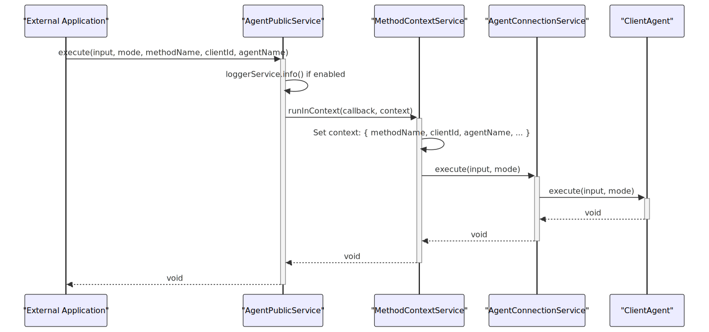

Public Services form the external API layer of the agent-swarm-kit framework, providing a clean interface for applications to interact with the swarm system. They act as a facade that delegates operations to Connection Services while handling cross-cutting concerns like context scoping, logging, and parameter validation.
For information about the underlying service instances and lifecycle management, see Connection Services. For service registration and dependency injection patterns, see Dependency Injection. For schema-driven service configuration, see Schema Services.
Public Services implement a consistent delegation pattern where they wrap Connection Service operations with MethodContextService for proper context scoping. This ensures that operations are executed with the correct clientId, agentName, swarmName, and other contextual parameters.

The framework provides twelve main Public Service classes, each responsible for a specific domain of functionality:
| Service Class | Purpose | Delegates To | Key Operations |
|---|---|---|---|
AgentPublicService |
Agent operations | AgentConnectionService |
execute, run, commitToolOutput |
SessionPublicService |
Session management | SessionConnectionService |
emit, connect, commitUserMessage |
StoragePublicService |
Client storage | StorageConnectionService |
take, upsert, remove, list |
StatePublicService |
Client state | StateConnectionService |
setState, getState, clearState |
SwarmPublicService |
Swarm coordination | SwarmConnectionService |
navigationPop, waitForOutput, getAgent |
HistoryPublicService |
Message history | HistoryConnectionService |
push, pop, toArrayForAgent |
SharedStoragePublicService |
Global storage | SharedStorageConnectionService |
take, upsert, remove, list |
SharedStatePublicService |
Global state | SharedStateConnectionService |
setState, getState, clearState |
PolicyPublicService |
Policy enforcement | PolicyConnectionService |
banClient, getAllowedOrigins, validate |
MCPPublicService |
MCP integration | MCPConnectionService |
listTools, callTool, getResources |
ComputePublicService |
Client compute | ComputeConnectionService |
setState, getState, clearState |
SharedComputePublicService |
Global compute | SharedComputeConnectionService |
setState, getState, clearState |
Public Services follow a consistent delegation pattern that provides several key benefits:
Every public method wraps its Connection Service call with MethodContextService.runInContext() to establish proper execution context:

Public Services use TypeScript mapped types to exclude internal methods from their interfaces:

This pattern ensures that internal methods like getAgent() in AgentConnectionService or getSwarm() in SwarmConnectionService are not exposed in the public API.
The MethodContextService integration is central to Public Service operations. Each method call establishes a complete execution context:
interface IMethodContext {
methodName: string; // The calling method name
clientId: string; // Session identifier
agentName: string; // Active agent
swarmName: string; // Target swarm
storageName: string; // Storage scope
stateName: string; // State scope
mcpName: string; // MCP integration
computeName: string; // Compute resource
policyName: string; // Policy enforcement
}
This context allows Connection Services to operate without requiring these parameters explicitly, as they can retrieve context via dependency injection.
All Public Services integrate with LoggerService for consistent logging when GLOBAL_CONFIG.CC_LOGGER_ENABLE_INFO is enabled:

The logging includes method name, parameters, and contextual information for debugging and monitoring.
AgentPublicService)Provides the primary interface for agent execution and lifecycle management:
execute() for stateful operations, run() for stateless completionscommitUserMessage(), commitSystemMessage(), commitAssistantMessage()commitToolOutput(), commitToolRequest()commitStopTools(), commitAgentChange(), commitFlush()SessionPublicService)Handles client session lifecycle and communication:
emit() for async communication, notify() for notificationsexecute() and run() at session level with validationconnect() for bidirectional communication channelsPerfService for execution trackingStoragePublicService / SharedStoragePublicService)Manages data persistence with embedding-based search:
take() for similarity-based search, get() for direct access, list() for enumerationupsert() for insert/update, remove() for deletion, clear() for resetStatePublicService / SharedStatePublicService)Provides reactive state management with middleware support:
setState() with dispatch functions, getState() for access, clearState() for resetPublic Services integrate with several cross-cutting concerns:
SessionPublicService includes PerfService integration for execution tracking:

This tracks execution duration, session state, and performance metrics.
Public Services coordinate with validation services for integrity checks:
Public Services serve as the bridge between external applications and the core swarm system:

This architecture ensures clean separation between external interfaces and internal implementation details while providing comprehensive functionality for multi-agent AI systems.